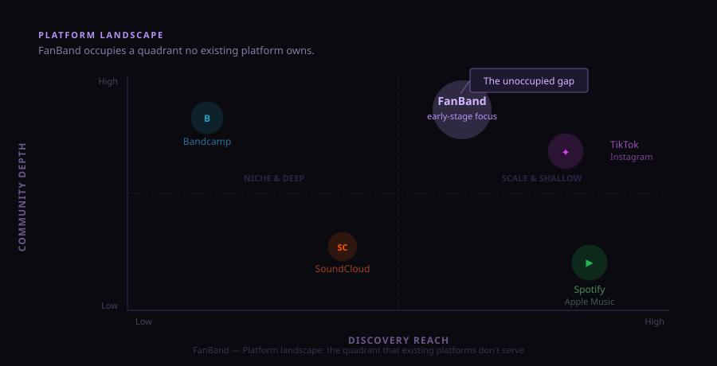

The Problem
Streaming algorithms reward momentum. Early artists and the fans who'd find them first have nowhere to meet.

What Was Built
Built around the music, not the numbers.
- Artists own their subscriber base — no algorithm between them and fans
- Fans discover by taste, not popularity — genre-curated, not trending
- 10 page types built in React with a consistent design system throughout
Outcome